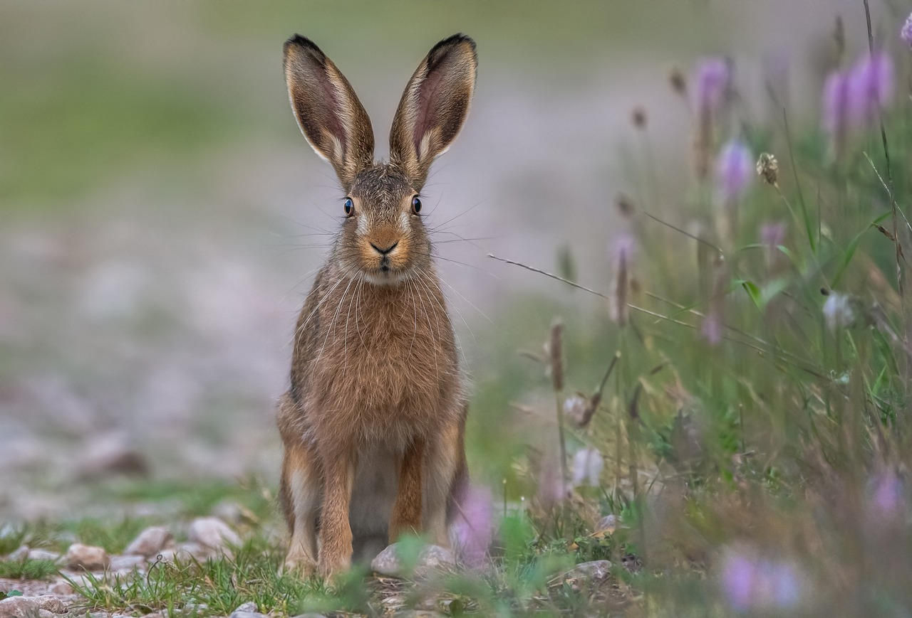

Rabbits have a number of behaviors that may be considered a nuisance. Some rabbits really enjoy digging. The purpose may be to find a safe place to hide, look for food or carve out a place to roll in. Not all rabbits dig but those that do can cause some damage to carpet.
Jumping is another behavior of some rabbits and is used to escape danger. Hopping is a normal movement of rabbits but jumping is not. A rabbit that suddenly begins running and jumping, often straight up in the air and twisting, is often in fear of his life. Make sure your bunny is not being chased or harassed by other pets or children.
Rabbits can make a variety of sounds but usually prefer to remain quiet. As a prey species they inherently do not want to draw attention to themselves. Content rabbits may purr softly, make clicking noises or slowly grind their teeth. If the rabbit feels aggressive, he may make grunting or growling noises. If a bunny is loudly grinding his teeth, this can mean he is angry, scared or in pain. A screaming rabbit is not something you ever want to hear. Rabbit screams are piercing and shrill and are associated with extreme fear or pain.
As with many animals, rabbits also use scent to mark their territory and communicate with other rabbits. Rabbits use feces, urine and scent glands to spread scent. The scent gland of a rabbit is located under the chin and rabbits will rub their chin on items they feel are important, including their human companions. The scent from these glands is not detectable by people but is very noticeable and understood by other rabbits. Male rabbits may also mark their territory by spraying urine on vertical surfaces, such as walls. To avoid this potentially nasty habit, have your male bunny neutered around the time of sexual maturity.
